Intersection
Record 10 opens the sequence with a ground-level street view.
A source-linked visual programme for real spaces, built from the city’s thresholds, systems, and edges.
A Montréal hotel, workplace, lobby, or hospitality programme needs imagery that feels specific, contemporary, and usable. The usual alternatives are generic skyline photography or an archive dump that leaves editing, rights, and installation questions to the buyer.
This study turns a bounded source set into a point of view, a spatial system, and an inspectable evidence trail.
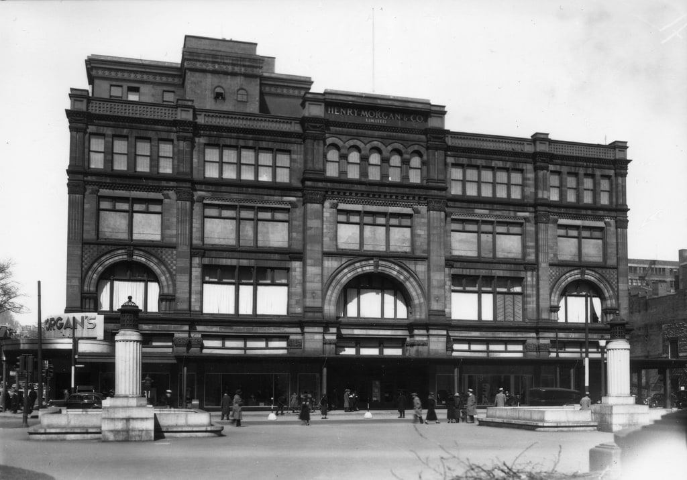
Record 31 · ground-street image mode · title/date shown as archive-reported metadata.
Montréal is remembered through the systems that made ordinary movement possible—storefronts, civic thresholds, roads, rail, and water.
Street views give the visitor a body and a pace. Aerial views change the scale of attention. Together they make a city that is lived rather than merely pictured.
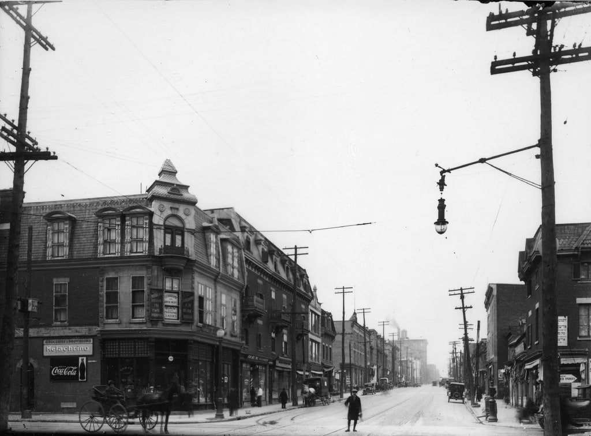
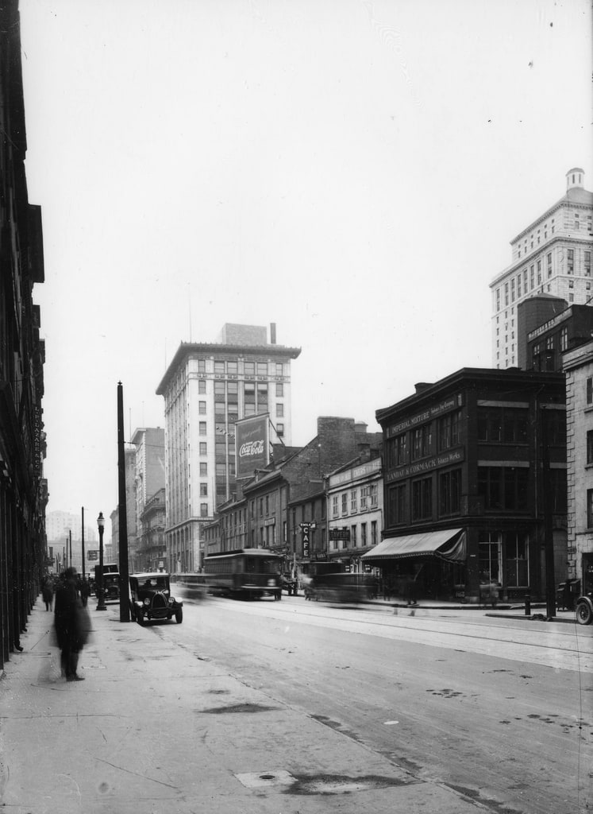
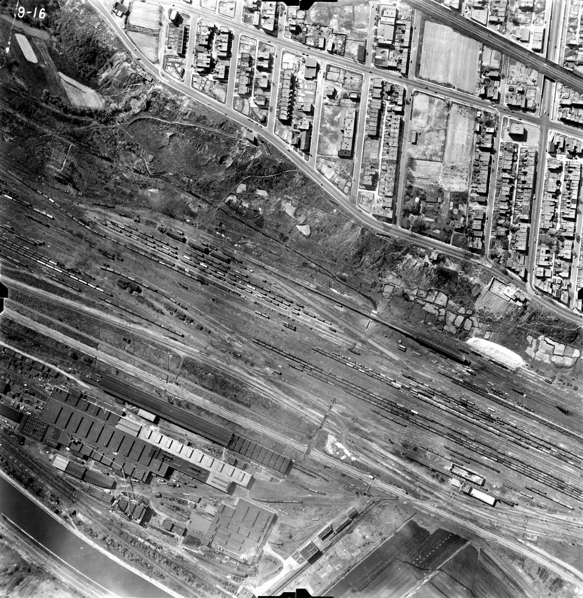
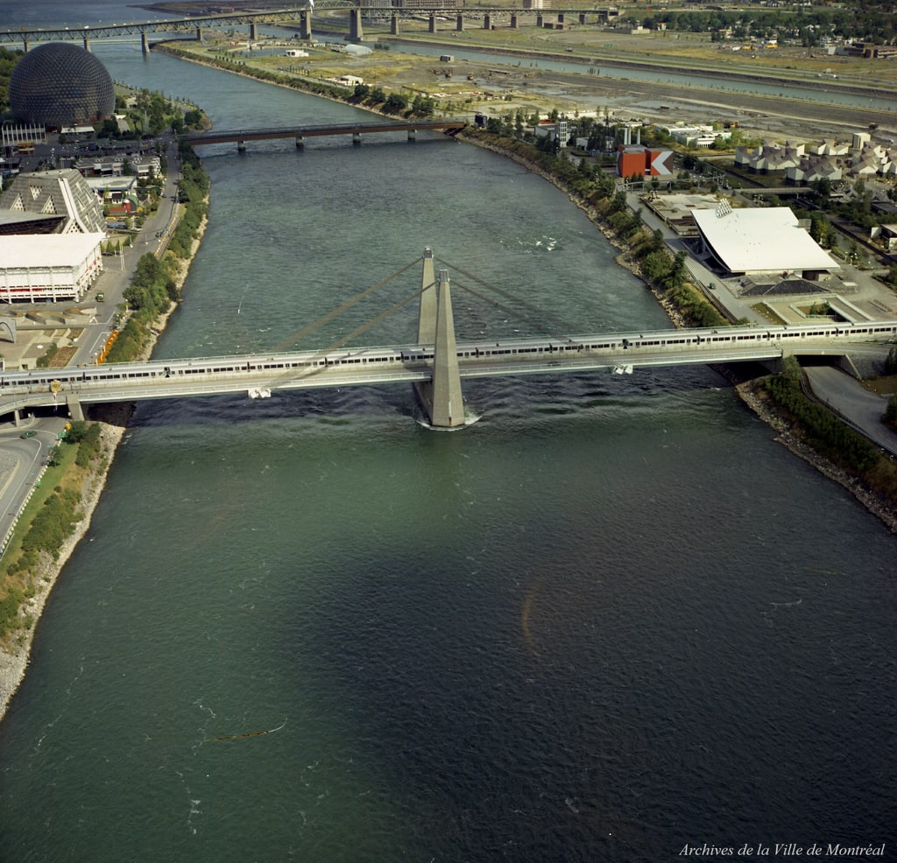
Record 10 opens the sequence with a ground-level street view.
Record 17 adds a vertical pause and a change of pace.
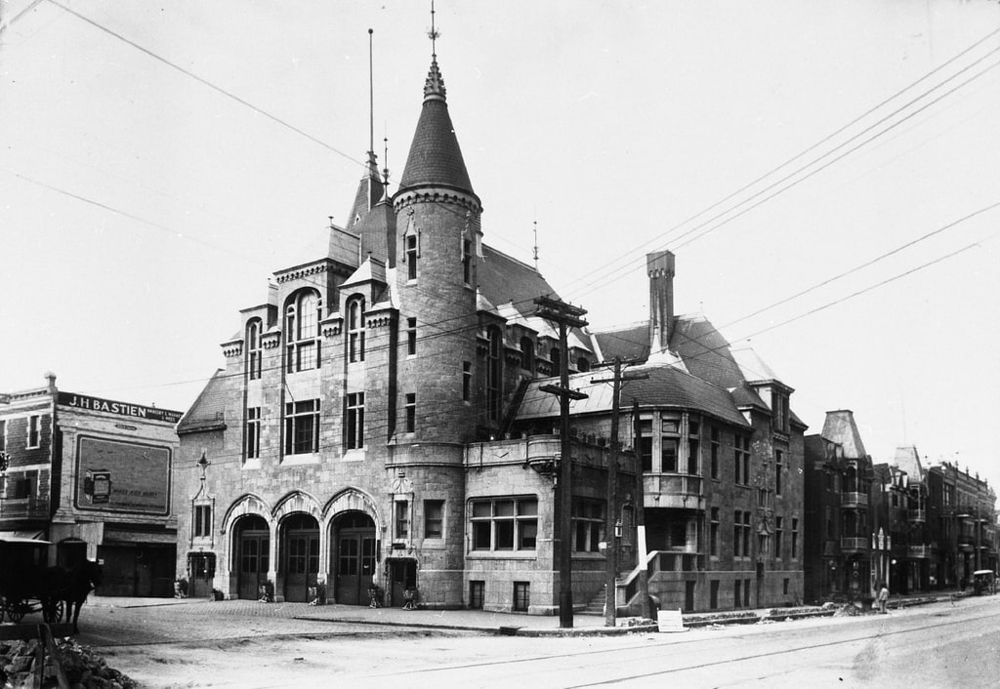
Record 45 gives the sequence an architectural counterpoint.
Recommended for: lobby statement + corridor sequence. All three image-mode claims were independently accepted in the review artifact; names and dates remain archive-reported.
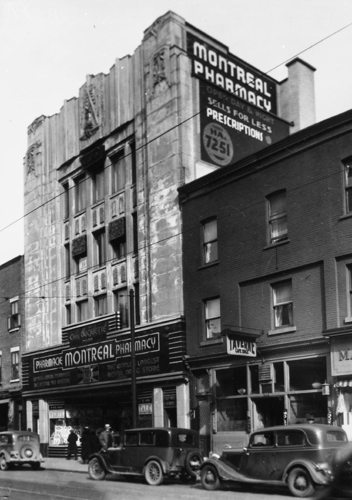
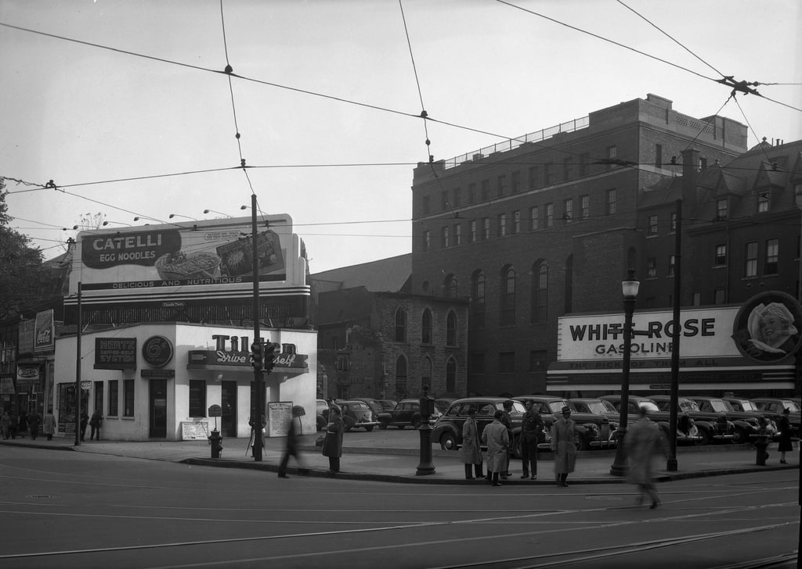
Pair a tight storefront detail with a wide commercial frontage. The direction treats commerce as visual texture—not as an invitation to make unsupported brand or building claims.
Records: 58 / 105 · ground-street image mode · CC BY 4.0 authority recorded.
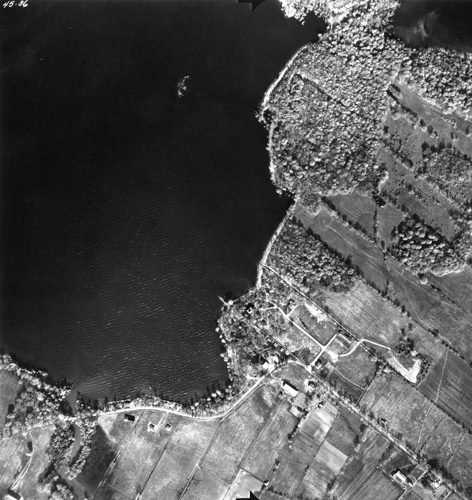
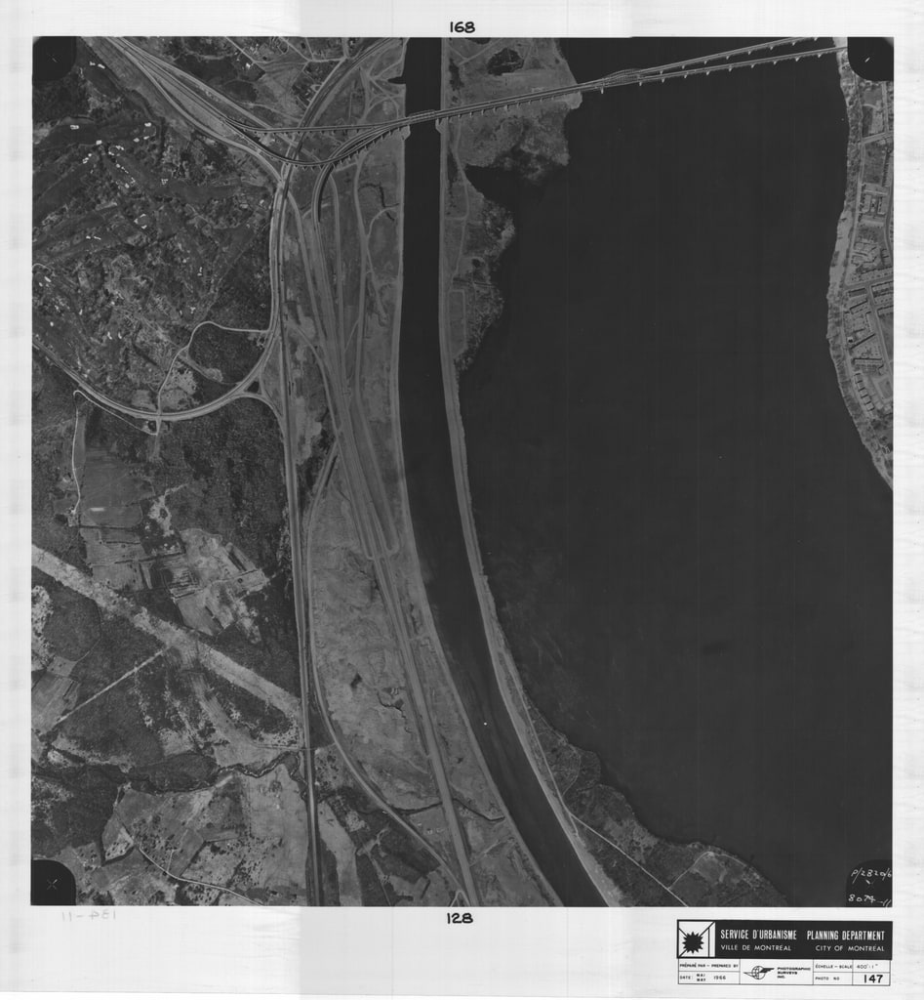
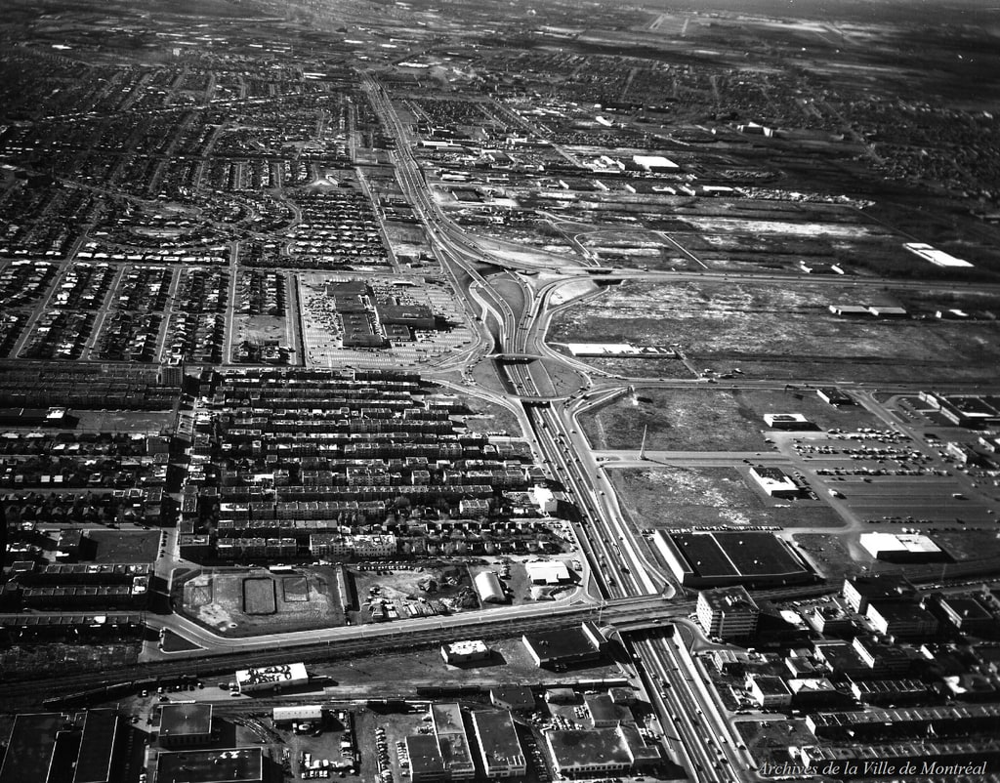
Aerial and oblique views offer a shift in scale. This package does not add coordinates, measurements, acreage, or land-use interpretations; those remain separate verification work.
Movement through the city—not a monument at the end of it.
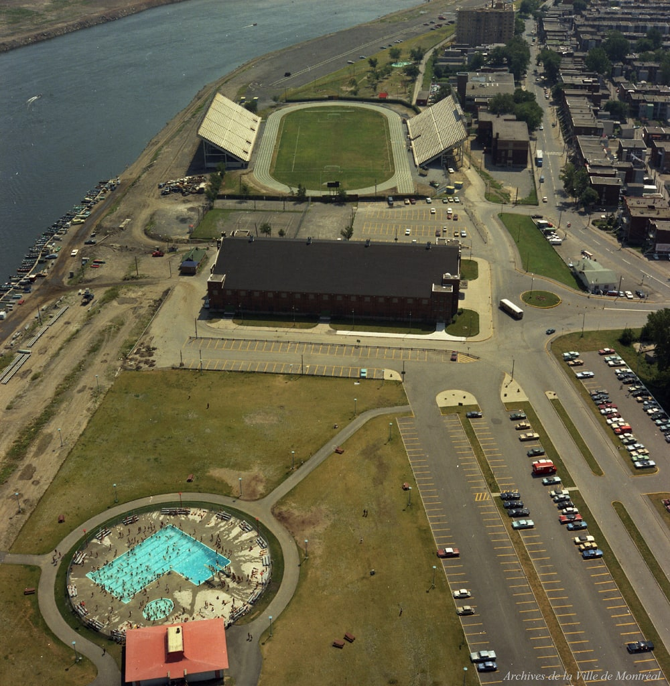
Use as an optional closing pair, quiet lounge grouping, or interpretive wall. The relationship is editorial; no location, route, or historical interpretation is added.
Make the source trail part of the experience without turning the room into a technology demo. A small caption or responsive evidence card can show archive-reported metadata, image-mode review, source URL, rights/attribution, and open uncertainty.
The image is the invitation. Provenance is why a buyer can use it with confidence.
See the full provenance ledger for packet hashes, approval flags, uncertainty, family links, and transform history.
Start with a 3–5 week City Memory Concept Study: brief and spatial intake, 30–60 source-linked candidates, 3–5 directions, 2–4 application concepts, a provenance/rights pack, and a production handoff note.
Indicative planning range: CAD $8,000–$25,000.
Print, framing, shipping, installation, insurance, taxes, third-party production, legal advice, and final fabrication files are excluded and scoped separately. This is a pricing hypothesis to test with qualified stakeholders—not a promise or quote.
Decision for the next conversation: would a buyer fund this fixed scope, and what proof or change is needed before commissioning it?